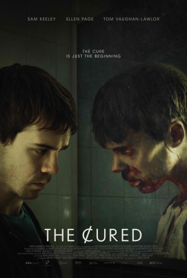

#9035 The Cured: Infiziert. Geheilt. Verstoßen.
 
 IMDB-Wertung: 5.4 / 10
IMDB-Wertung: 5.4 / 10  Metascore: 57
Metascore: 57 
A disease that turns people into zombies has been cured. The once-infected zombies are discriminated against by society and their own families, which causes social issues to arise. This leads to militant government interference.
Jahr: 2017
Dauer: 95 Minuten
FSK: 16
Land: Irland Studio: Splendid FilmTonspuren: DTS - ,
Untertitel: Deutsch,
Auflösung: 1080p (1920x800) Größe: 4608 MB
Genre: Horror, Drama, Sci-Fi
Regisseur: David Freyne
Drehbuch: David Freyne
Soundtrack: Rory Friers, Niall Kennedy
Darsteller:
 Ellen Page als Abbie
Ellen Page als Abbie Sam Keeley als Senan
Sam Keeley als Senan Tom Vaughan-Lawlor als Conor
Tom Vaughan-Lawlor als Conor Stuart Graham als Cantor
Stuart Graham als Cantor Paula Malcomson als Dr. Lyons
Paula Malcomson als Dr. Lyons- Natalia Kostrzewa als Allison
- Hilda Fay als Jo landecker
- Sarah Kinlen als Catherine
 Judy Donovan als Moore Street Trader
Judy Donovan als Moore Street Trader- Lesley Conroy als Katie
- Amy De Bhrún als American Journalist
- Chelsea Debo als Cured wife
- Tadhg Devery als Soldier
- Tara Flynn als Minister Hickey
- Sandy Kennedy als Cured Woman
- Niamh McCann als Nicola
- Dez McMahon als Boarder Guard / Soldier
- Patrick Murphy als The UN Soldier
- Tj O'Grady Peyton als Husband
- Brian Tynan als Vox Pop Man
- Frank Cannon als Garda, Ranger, Zombie, UN Soldier
- Alan Moriarty als Teenage Boy 2
- Amy W. Naves als Cured Zombie
- Keith Nolan als Infected Zombie
- Laura Scanlon als Cured Woman
Datei: X:\2017(A-F)\Cured Infiziert. Geheilt. Verstoßen., The (2017, FSK16, 1920x800).mkv seit 08.06.2018
Festplatte: HD 2017(A-Z)-2018(A-F)
 Es gibt insgesamt 152 Filme in der Gruppe '2017(A-F)'
Es gibt insgesamt 152 Filme in der Gruppe '2017(A-F)'